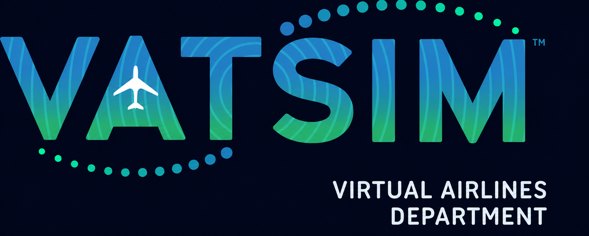

Audit Manager Portal
Welcome back.
Sign in to open your assigned audits and connect with VA representatives.
Use the VATSIM account linked to your Audit Manager record in AMS.
Need access?
Contact the department team to check your staff assignment.
Sandbox preview views
Example data only. VATSIM sign-in and saving are disabled in this preview.